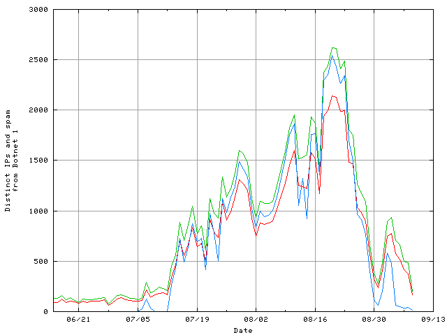

It's the botnet, and if you have no idea what I'm talking about, read this.
The project is getting unwieldy, so here's a timeline which I will attempt to decorate with links as I get the time.
!include timeline.wiki
Now here's a thought. If BN1 were involved in the Russian invasion of Georgia, in terms of a DDoS of Georgian Internet services before the event, I would expect to see less bandwidth devoted to expansion spamming during that time. This plot is crude (it's been many years since I dusted off gnuplot) but:

You tell me. Is that meaningful?
2008-08-04: The botnet switched email formats today, with a rather nice-looking knockoff of the CNN news format, but the exploit spammed is the same. It took me a bit to rewrite the analysis code (because I honestly didn't expect to have to maintain it!) but I've resumed tracking the links spammed. Most of those are pretty much the same, except that there's a new CNN-like page being hacked onto some of the new servers.
The new spam all has the subject "CNN.com Daily Top 10".
Incidentally, I have about 1300 IPs of botnet PCs being used to inject this spam (and a strategy, not yet implemented, to find more by datamining more of my records). If anybody can think of something interesting to do with that, I'd be happy to hear your ideas.
2008-08-08 - In case you weren't paying attention, the botnet subject du jour is "CNN Alerts: My Custom Alert" - I ended up with 3,498 copies of the Top 10, though. Oh, and I misremembered the number of botnet IPs I have. It was 13,000 -- and now it's 15,000. (And change.) I think I'm going to have to get that blocklist DNS server up that I've been considering for so long.
2008-08-10 - If you were wondering, the "Internet Explorer 7" spam is not from the same group (I'm calling it "Botnet 2"); none of the origination IPs match the list of IPs injecting these spams here. But they do seem to be using the same modus operandi, with hijacked servers to host their exploits. If I've got time tomorrow, I'll try to set up the same kind of scanning I've got for this botnet. ("This is getting out of hand! Now there are two of them!")
In other news, the Storm botnet has resumed spamming some non-exploit (read: Canadian pharmacy) spam amongst its attempts to expand, and I just got a run-of-the-mill spam entitled "German farmer attacks police over cows held in dark," which is not from the botnet, either. I'm heartened to note that someone is still upholding the tradition of funny headlines. I'd started to miss those.
2008-08-11 - but at least we have a new landing page today. In an interesting new twist, it pops up a window loaded from asvoo.org. We've already seen asvoo.org, as it's already been spammed as a normal landing page carrier. But this is is a first, that other landing pages are linking to another hijacked server. I do believe it's simply been hijacked, though, as the registration is a consulting company in Germany. I've emailed them. The morning will be starting there soon; let's see if their admin contact is an early riser.
Interesting!
2008-08-13: msnbc.com - BREAKING NEWS: Botnet switches email formats! Now that I'm parsing the new mails correctly, though, we can see that they haven't changed landing pages yet. But o frabjous day -- we're getting new headlines!
BBC NEWS spam is not the group I'm tracking here, and due to the way I've built things, it's difficult for me to extend the tracker. But I intend to soon. (BBC NEWS also doesn't overlap with BN2, so I've gone out on a creative limb to call this group "Botnet 3".)
2008-08-13, evening: Yep, BN1 has changed their landing pages to look like MSNBC now.
2008-08-15: Well, now I'm not so sure these botnets are separate. BN1 has been dropping some spam that sure looks like the modus operandi of BN3. I'll need to develop some better tools to examine this theory, though; BN3 doesn't spam the same addresses as BN1, let alone from the same IPs. It's all very confusing (which is why it's fun).
2008-08-16: Still quiet; same subjects, same email format, same landing page. I've spent some time going back over old landing pages and getting things organized -- and I discovered one landing page that had been re-hacked -- twice, within 4 hours of one another, yesterday. Congratulations to cosasagapornis.com for the Most-Hacked Award of the day for August 15, 2008.
Incidentally, as of tonight I have 35,162 botnet IPs identified in BN1.
2008-08-17: Yeah, I thought it was time. New mail (BREAKING news), new landing page (anonymized to "Watch Free Movie" again), and new bugs discovered in my scanning routines, ha. (Fixed, of course.)
2008-08-17: Stop the presses! They've switched back to a CNN Top 10 Video email, with a format containing 16 links. The landing pages haven't changed, though.
2008-08-18: You know how when you start a fun little project, and you need to do something like, say, parse MIME, and you cobble together some Perl to do what you need to do? And then you start relying on that code until it breaks due to something you didn't think of? And then you grumble and rewrite it all with MIME::Parser, which you should have done in the first place?
I hate that. (Note to self: next time, check CPAN first.)
2008-08-18: You know how when you're assuming constant subjects, the object of your pursuit changes strategy and uses the To: name in the subject to throw you off, so you have to implement a second level of searching to filter your SQL replies after looking at the headers you have stored in files based on a simple field delineation in your target subject?
I hate that. (The subject in question: "Hi %(name)", where name is the name in the addressee in the header.)
2008-08-20: All Britney, all the time -- and linking directly to the malware executables for now. Which is good, because I was starting to feel a little ragged, trying to keep up with analysis of the HTML and Javascript pages. But as you can see, my viewer is a little disappointing when confronted with binary files.
I've been working a little with Win32::Exe (remember, kids, always check CPAN first) but it's tough going, and frankly I'm not yet sure what static analysis can bring. Unfortunately, the dynamic analysis tools I've tried so far have been somewhat underwhelming in their analysis of the malware I've tried.
2008-08-21: Well, this is less fun -- the current modus operandi (since about Aug. 18) is to link directly to a hosted executable, usually with a picture in the email (nude Angelina Jolie, for instance). Block all incoming mail with links to executables, and you're good.
I'm using the time to reassess my monitoring process, summarized here. The original datamining was based on the subjects of the emails, then on the users receiving them. But now that I know a whole lot of IPs I know to be the botnet, I can simply look at whatever those IPs are feeding me, and go from there. There's a lot I was missing, and I can also see more clearly the other types of spam the botnet has still been sending me all along.
I can still look at existing subjects to get more candidate IPs to be investigated as botnet members (and will have to do that), but this is a much cleaner way of doing things. Work is ongoing.
Oh -- my other epiphany in this respect. I've been thinking of spam category as being a property of the email. Conceptually, this is wrong -- spam category should logically be a property of the link spammed. (If there's no link, then the content determines category.) This changes the way analysis should proceed, obviously; I can simply total up all the links spammed, then categorize each one, and each mail which spammed it shares that category.
2008-08-31: Well, as you can see, they're using email names in the subject line as spoilers. I have a plan to counter that automatically, but in the meantime it makes traffic look sparse.
I've been spending time building some new scanning tools, and on gauging similarity based on mutual compression ratios. It works astoundingly well for text files, but the binaries are already compressed, so you can't detect similarity that way.
I was considering doing multidimensional scaling to cluster the pages, but (1) MDS is really hard, and (2) I'm not even sure it would result in meaningful information. I can cluster based on rough similarity, though, and that will already be pretty interesting. More later on that.
2008-09-06 - Got the name scanner working; now new subjects which incorporate the name of the addressee will cause a broader search for all similar subjects. If there are any, they'll all be grouped automatically with the subject template. This is working pretty nicely.
I also have an online page-diff viewer working. This makes it easier to see what variations are being used in landing pages. The next step in that thread would be automatic discovery of templates; then very similar pages could be stored in template form, with a list of the values filled into the templates. That would be kind of neat.
In other news, the botnet operators have been using landing pages for their standard spam runs now (forwarding to, say, Canadian pharmacy shopping sites). In the past, these landing pages have been reserved for botnet malware distribution, but this new change means that some of the run-of-the-mill spam is now showing up on this page. Sorry. Until I can automatically figure out whether a given landing page is intended to distribute malware (not an insuperable task) I'm going to have to display everything that looks like a landing page. So for the time being, not everything here is a malware site.
Anyway, here are the 50 most recent botnet spam subjects (something less than a day's worth):
(Most recent 50) Report run Wed Apr 8 04:29:42 2009 | |||
| Subject | # archived | Last found | First found |
|---|---|---|---|
| Blowout savings here | 19 | 2009-01-23 04:06:07 | 2008-10-16 01:00:37 |
| You have received an eCard | 652 | 2008-12-12 21:10:45 | 2008-09-09 04:02:58 |
| CNN Alerts: My Custom Alert | 7520 | 2008-10-21 12:08:27 | 2008-08-08 00:17:46 |
| Get in shape Fast. | 13 | 2008-10-18 15:59:32 | 2008-10-18 01:53:55 |
| Your credit score | 14 | 2008-10-18 14:06:22 | 2008-10-18 01:50:49 |
| Hottest price for hottest nights | 15 | 2008-10-17 20:39:52 | 2008-10-17 01:40:49 |
| Huge tool for everyone | 16 | 2008-10-17 20:26:43 | 2008-10-17 01:25:50 |
| McCane private party | 19 | 2008-10-17 20:24:50 | 2008-10-17 01:29:42 |
| Hottest selling tips on net | 17 | 2008-10-17 19:54:41 | 2008-10-17 02:02:19 |
| Hot, horny, yours | 16 | 2008-10-17 19:34:07 | 2008-10-17 01:12:03 |
| Mindblowing sales | 20 | 2008-10-17 19:07:07 | 2008-10-17 01:20:37 |
| Obama's private video | 28 | 2008-10-17 18:22:44 | 2008-10-17 01:45:28 |
| Amaze the girls around | 10 | 2008-10-17 17:33:08 | 2008-10-17 01:35:15 |
| Your path to cash | 17 | 2008-10-17 17:28:04 | 2008-10-17 01:38:47 |
| How crysis can affect you | 13 | 2008-10-17 17:02:03 | 2008-10-17 01:25:28 |
| 80% cut on Halloween | 13 | 2008-10-17 16:29:20 | 2008-10-17 01:32:08 |
| Make her come triple tonight | 9 | 2008-10-17 16:12:04 | 2008-10-17 02:15:22 |
| Your way to satisfaction | 14 | 2008-10-17 15:58:03 | 2008-10-17 01:26:52 |
| Amaze her with growth | 22 | 2008-10-17 15:50:56 | 2008-10-17 01:57:26 |
| Take her everywhere | 11 | 2008-10-17 15:41:51 | 2008-10-17 01:33:21 |
| All what you need | 12 | 2008-10-17 15:40:44 | 2008-10-17 02:56:50 |
| Huge discounts on huge growth | 16 | 2008-10-17 15:26:40 | 2008-10-17 01:42:00 |
| Your home video discovered | 12 | 2008-10-17 15:25:10 | 2008-10-17 01:51:38 |
| Crazy low prices | 22 | 2008-10-17 14:38:56 | 2008-10-17 01:25:08 |
| Crysis heat here | 10 | 2008-10-17 14:34:13 | 2008-10-17 01:49:03 |
| Take her to seventh sky | 15 | 2008-10-17 14:11:36 | 2008-10-17 03:32:17 |
| Enlarge your savings | 23 | 2008-10-17 13:26:41 | 2008-10-17 01:18:45 |
| Dont let the crysis hit you | 17 | 2008-10-17 12:56:10 | 2008-10-17 01:39:07 |
| One week-3 inches more | 12 | 2008-10-17 10:44:21 | 2008-10-17 01:37:04 |
| Beat the high prices | 15 | 2008-10-16 23:44:23 | 2008-10-16 00:35:11 |
| Confirm your present | 19 | 2008-10-16 23:08:05 | 2008-10-16 00:44:01 |
| She wants real male | 19 | 2008-10-16 22:03:20 | 2008-10-16 00:56:58 |
| Unbelievably low prices | 38 | 2008-10-16 21:59:48 | 2008-10-16 00:22:14 |
| Beat up the crysis | 17 | 2008-10-16 21:59:21 | 2008-10-16 00:40:07 |
| Please reply | 29 | 2008-10-16 21:41:04 | 2008-10-16 01:54:44 |
| You know she wants it big | 16 | 2008-10-16 21:20:34 | 2008-10-16 00:41:57 |
| Best Price Guaranteed | 29 | 2008-10-16 21:09:23 | 2008-10-16 00:20:26 |
| Beat the crysis. | 16 | 2008-10-16 20:34:55 | 2008-10-16 00:22:15 |
| Crazy wholesale | 19 | 2008-10-16 20:23:31 | 2008-10-16 00:53:27 |
| Make your woman hot n wet | 30 | 2008-10-16 20:21:34 | 2008-10-16 00:10:00 |
| Make her horny | 22 | 2008-10-16 20:04:17 | 2008-10-16 01:00:59 |
| Why spend more? | 45 | 2008-10-16 19:59:29 | 2008-10-16 00:35:09 |
| We have chosen the best for you | 17 | 2008-10-16 19:53:16 | 2008-10-16 01:32:13 |
| Be a winner in bed | 27 | 2008-10-16 19:39:38 | 2008-10-16 00:44:54 |
| Save more today | 19 | 2008-10-16 19:14:31 | 2008-10-16 00:12:22 |
| Your reply needed | 16 | 2008-10-16 18:50:35 | 2008-10-16 00:49:35 |
| Big discount for small orders | 16 | 2008-10-16 18:41:59 | 2008-10-16 00:49:43 |
| Drive your wife wild | 17 | 2008-10-16 17:44:01 | 2008-10-16 00:24:23 |
| Your private video here | 18 | 2008-10-16 16:22:24 | 2008-10-16 00:35:33 |
| Your hidden secret revealed | 11 | 2008-10-16 14:55:12 | 2008-10-16 00:31:22 |
The full list is here.
And here are the 50 most recently spammed servers (bolded links returned HTTP 200 on last check, but some of those returns are non-malware boilerplate at this point; those I've flagged appear non-bolded but in parentheses and count as clear for analysis).
(Most recent 50) Report run Wed Apr 8 04:29:58 2009 | |||
| Start URL | CRC of page | Last found | First found |
|---|---|---|---|
| http://watsonjkc.by.ru/index.html | 2666802812-4015683220 | 2009-01-23 04:06:07 | 2009-01-23 04:06:07 |
| http://www.sncgbl.com/e-card.exe | 60537107-192533785 | 2008-12-12 21:10:45 | 2008-12-10 15:09:37 |
| http://zonzamas.info/ecard.exe | 1055904057-2325687722 | 2008-11-13 15:57:36 | 2008-11-11 04:28:00 |
| http://www.123greetings.com | 3705026843-1210521700 | 2008-11-13 15:57:36 | 2008-09-09 06:27:20 |
| http://laureselignac.com/e-card.exe | 2994239545-1599095204 | 2008-10-30 02:46:27 | 2008-10-29 07:11:14 |
| http://omzgolitsino.ru/cnnhottopics.html | Obfuscated CNN | 2008-10-21 12:08:27 | 2008-08-10 13:16:01 |
| http://www.whethergrand.com/linkto/bn.manage.html | 2008-10-18 15:59:32 | 2008-10-18 09:41:25 | |
| http://www.whethergrand.com/ | 2008-10-18 15:59:32 | 2008-10-18 09:41:25 | |
| http://www.whethergrand.com/m/clik?e=rjh@vivtek.com&l=cnn-dailytop10 | 2008-10-18 15:59:32 | 2008-10-18 15:59:32 | |
| http://www.createready.com/m/clik?e=vivtek.comrms46@vivtek.com&l=cnn-dailytop10 | 2008-10-18 15:37:14 | 2008-10-18 15:37:14 | |
| http://www.createready.com/linkto/bn.manage.html | 2008-10-18 15:37:14 | 2008-10-18 01:53:30 | |
| http://www.createready.com/ | 2008-10-18 15:37:14 | 2008-10-18 01:53:30 | |
| http://www.forgivenesslove.com/linkto/bn.manage.html | 2008-10-18 15:24:58 | 2008-10-18 15:24:58 | |
| http://www.forgivenesslove.com/m/clik?e=gerbertambrose@vivtek.com&l=cnn-dailytop10 | 2008-10-18 15:24:58 | 2008-10-18 15:24:58 | |
| http://www.forgivenesslove.com/ | 2008-10-18 15:24:58 | 2008-10-18 15:24:58 | |
| http://www.tonewest.com/m/clik?e=noquarter@despammed.com&l=cnn-dailytop10 | 2008-10-18 15:06:26 | 2008-10-18 15:06:26 | |
| http://www.tonewest.com/ | 2008-10-18 15:06:26 | 2008-10-18 15:06:26 | |
| http://www.tonewest.com/linkto/bn.manage.html | 2008-10-18 15:06:26 | 2008-10-18 15:06:26 | |
| http://www.possiblegood.com/ | 2008-10-18 15:02:11 | 2008-10-18 15:02:11 | |
| http://www.possiblegood.com/m/clik?e=miquelsm@vivtek.com&l=cnn-dailytop10 | 2008-10-18 15:02:11 | 2008-10-18 15:02:11 | |
| http://www.possiblegood.com/linkto/bn.manage.html | 2008-10-18 15:02:11 | 2008-10-18 15:02:11 | |
| http://www.fromyes.com/ | 2008-10-18 14:06:22 | 2008-10-18 02:11:51 | |
| http://www.fromyes.com/m/clik?e=02@vivtek.com&l=cnn-dailytop10 | 2008-10-18 14:06:22 | 2008-10-18 14:06:22 | |
| http://www.fromyes.com/linkto/bn.manage.html | 2008-10-18 14:06:22 | 2008-10-18 02:11:51 | |
| http://www.chiefterm.com/m/clik?e=paulvtm@vivtek.com&l=cnn-dailytop10 | 2008-10-18 13:51:36 | 2008-10-18 13:51:36 | |
| http://www.chiefterm.com/linkto/bn.manage.html | 2008-10-18 13:51:36 | 2008-10-18 13:51:36 | |
| http://www.chiefterm.com/ | 2008-10-18 13:51:36 | 2008-10-18 13:51:36 | |
| http://www.strengthfly.com/linkto/bn.manage.html | 2008-10-18 11:57:04 | 2008-10-18 07:15:00 | |
| http://www.strengthfly.com/ | 2008-10-18 11:57:04 | 2008-10-18 07:15:00 | |
| http://www.strengthfly.com/m/clik?e=chao@vivtek.com&l=cnn-dailytop10 | 2008-10-18 11:57:04 | 2008-10-18 11:57:04 | |
| http://www.rubpush.com/ | 2008-10-18 11:31:54 | 2008-10-18 10:05:44 | |
| http://www.rubpush.com/linkto/bn.manage.html | 2008-10-18 11:31:54 | 2008-10-18 10:05:44 | |
| http://www.rubpush.com/m/clik?e=karlenss@vivtek.com&l=cnn-dailytop10 | 2008-10-18 11:31:54 | 2008-10-18 11:31:54 | |
| http://www.fromyes.com/m/clik?e=lucaise@vivtek.com&l=cnn-dailytop10 | 2008-10-18 10:51:10 | 2008-10-18 10:51:10 | |
| http://www.rubpush.com/m/clik?e=podlodka131@despammed.com&l=cnn-dailytop10 | 2008-10-18 10:05:44 | 2008-10-18 10:05:44 | |
| http://www.momentlove.com/linkto/bn.manage.html | 2008-10-18 09:56:48 | 2008-10-18 05:03:34 | |
| http://www.momentlove.com/m/clik?e=tozzi@despammed.com&l=cnn-dailytop10 | 2008-10-18 09:56:48 | 2008-10-18 09:56:48 | |
| http://www.momentlove.com/ | 2008-10-18 09:56:48 | 2008-10-18 05:03:34 | |
| http://www.whethergrand.com/m/clik?e=jlaijy@vivtek.com&l=cnn-dailytop10 | 2008-10-18 09:41:25 | 2008-10-18 09:41:25 | |
| http://www.couragecommon.com/m/clik?e=alexkrishnah@vivtek.com&l=cnn-dailytop10 | 2008-10-18 09:35:32 | 2008-10-18 09:35:32 | |
| http://www.couragecommon.com/linkto/bn.manage.html | 2008-10-18 09:35:32 | 2008-10-18 01:50:49 | |
| http://www.couragecommon.com/ | 2008-10-18 09:35:32 | 2008-10-18 01:50:49 | |
| http://www.fromyes.com/m/clik?e=imaginatorium@despammed.com&l=cnn-dailytop10 | 2008-10-18 08:33:38 | 2008-10-18 08:33:38 | |
| http://www.aspirationtold.com/linkto/bn.manage.html | 2008-10-18 07:53:28 | 2008-10-18 03:36:23 | |
| http://www.aspirationtold.com/m/clik?e=podlodka131@despammed.com&l=cnn-dailytop10 | 2008-10-18 07:53:28 | 2008-10-18 07:53:28 | |
| http://www.aspirationtold.com/ | 2008-10-18 07:53:28 | 2008-10-18 03:36:23 | |
| http://www.strengthfly.com/m/clik?e=info@vivtek.com&l=cnn-dailytop10 | 2008-10-18 07:15:00 | 2008-10-18 07:15:00 | |
| http://www.hardfresh.com/linkto/bn.manage.html | 2008-10-18 07:09:43 | 2008-10-18 07:09:43 | |
| http://www.hardfresh.com/m/clik?e=justus@vivtek.com&l=cnn-dailytop10 | 2008-10-18 07:09:43 | 2008-10-18 07:09:43 | |
| http://www.hardfresh.com/ | 2008-10-18 07:09:43 | 2008-10-18 07:09:43 | |
The full list is here.